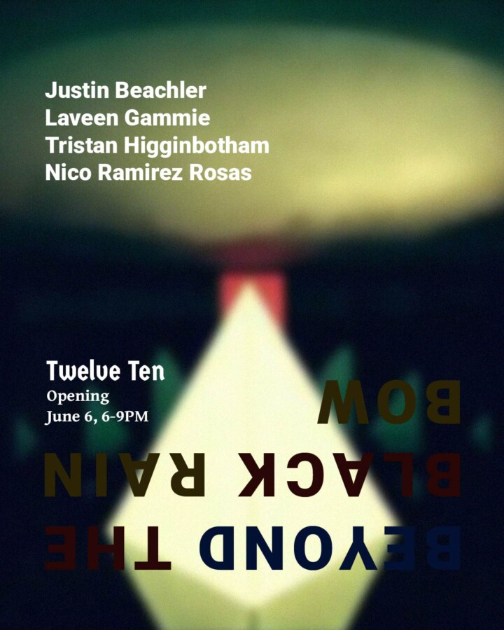

Beyond the Black Rainbow: Justin Beachler, Laveen Gammie, Tristan Higginbotham, Nico Ramirez Rosas
Twelve Ten Gallery is pleased to present “Beyond the Black Rainbow”, a group exhibition titled after the 2010 film and featuring Justin Beachler, Laveen Gammie, Tristan Higginbotham, and Nico Ramirez Rosas.
Italian-Canadian director Panos Cosmatos’ film unfolds as a hallucinatory vision of technological utopianism turned malignant. Set against the rise and collapse of postwar idealism, it traces the development of the fictional Aboria Institute, a research center founded in the 1960s on the promise of achieving human happiness through pharmaceuticals, spiritual therapy, and scientific advancement. By the 1980s, that promise curdles into something menacingly psychosexual and authoritarian. Centered on two figures: Dr. Barry Nyle (Michael J Rogers), a researcher and disciple of the institute’s ideology, and Elena (Eva Bourne), a psychic young woman held captive under his supervision, we see through their relationship how enlightenment mutates into domination and self-optimization into institutionalized abuse.
More than an exercise in retro-futurist style, “Beyond the Black Rainbow” maps the trajectory of Western liberal optimism into the technologized logic of late capitalism. This ideological transformation finds a parallel in “Network”, Sidney Lumet’s 1976 satire of mass media and corporate power. Released near the midpoint of the historical arc imagined by Cosmatos’ film, “Network” presents one of the clearest, most compelling descriptions of neo-liberalism:
“We no longer live in a world of nations and ideologies … The world is a college of corporations, inexorably determined by the immutable bylaws of business. The world is a business … It has been since man crawled out of the slime. And our children will live … to see that perfect world in which there’s no war or famine, oppression or brutality — one vast and ecumenical holding company, for whom all men will work to serve a common profit, in which all men will hold a share of stock, all necessities provided, all anxieties tranquilized, all boredom amused.”
This speech, delivered by the corporate head of the network to Howard Beale (Peter Finch), who plays a charismatic but rebellious anchorman, ends with Beale accepting the revelation as divine truth, declaring he has “seen the face of God.”
A similar revelation haunts Barry Nyle. It is eventually disclosed that he himself is a product of the Aboria Institute’s experiments. Before murdering his wife and fully embracing his psychic transformation, he recounts a vision of transcendence: “I looked into the eye of God. And it looked back through me… it was so, so, so beautiful, like a black rainbow… and it chose me, it chose me, to reveal itself to me. You’re nothing. You’re less than nothing. Just… spit in the wind.”
More than forty years after the historical horizon evoked by these films, from the optimism of JFK to the deregulated excesses of Reaganism, we now inhabit the aftermath of that ideological project. The promises of liberation through technology, consumption, and self-actualization persist, but largely as exhausted spectacles masking systems of extraction, pharmacological dependence, surveillance, and psychic fragmentation. This exhibition draws from the thematic and aesthetic language of “Beyond the Black Rainbow” to reflect on that contemporary condition.
Justin Beachler collects ephemera from New Age movements and countercultural self-help systems, transforming them into minimalist sculptures that oscillate between devotion and obsolescence. Tristan Higginbotham constructs biomorphic forms from consumer debris and organic residue, producing objects that feel simultaneously synthetic and alive. Laveen Gammie stages haunted interiors that conceal and expose forms of collective psychosis embedded within everyday space. Nico Ramirez Rosas engages the pharmakon to excavate the spiritual, traumatic, and chemically mediated dimensions of contemporary life.